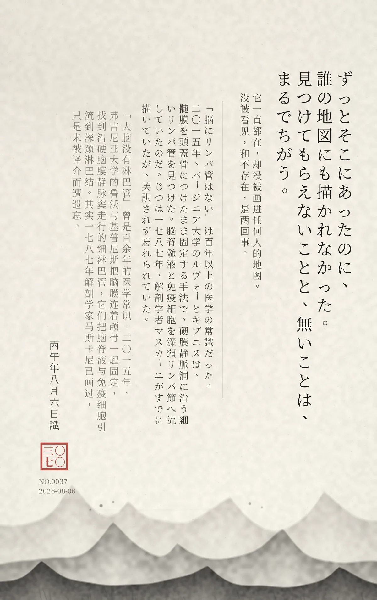

ずっとそこにあったのに、誰の地図にも描かれなかった。見つけてもらえないことと、無いことは、まるでちがう。 / 它一直都在，却没被画进任何人的地图。没被看见，和不存在，是两回事。
「脳にリンパ管はない」は百年以上の医学の常識だった。二〇一五年、バージニア大学のルヴォーとキプニスは、髄膜を頭蓋骨につけたまま固定する手法で、硬膜静脈洞に沿う細いリンパ管を見つけた。脳脊髄液と免疫細胞を深頸リンパ節へ流していたのだ。じつは一七八七年、解剖学者マスカーニがすでに描いていたが、英訳されず忘れられていた。 / 「大脑没有淋巴管」曾是百余年的医学常识。2015 年，弗吉尼亚大学的 Louveau 与 Kipnis 把脑膜连着颅骨一起固定，找到沿硬脑膜静脉窦走行的细淋巴管，它们把脑脊液与免疫细胞引流到深颈淋巴结。其实 1787 年解剖学家马斯卡尼已画过，只是未被译介而遭遗忘。